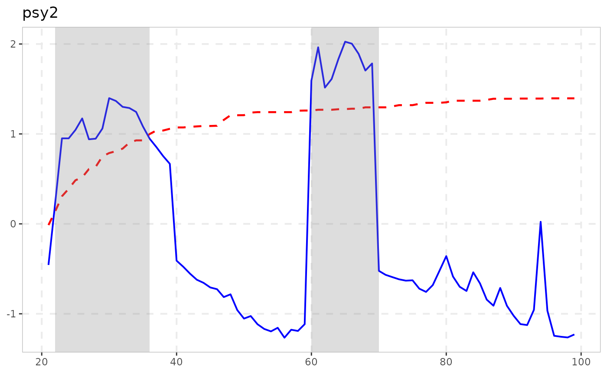

Naming Conventions and the Analysis/Tidying/Plotting Pipeline
Source:vignettes/naming-and-analysis.Rmd
naming-and-analysis.RmdWhy this exists
exuber started as one test (radf(), the
recursive ADF/SADF/GSADF/BSADF statistic of Phillips, Shi & Yu 2015)
and grew, through a long research programme, into roughly 25 functions
covering a dozen papers’ worth of related-but-distinct methodology:
alternative tests, dating procedures, monitoring schemes, root
inference. Every one of them used to be named
radf_<something>(), which was accurate for some and
misleading for others – a radf_ prefix reads as “this is a
recursive-ADF statistic,” but several of these functions are not that at
all. This vignette documents the naming scheme that replaced it, and –
more usefully – which functions can actually be plugged into the shared
summary()/datestamp()/tidy()/autoplot()
pipeline built for radf(), and which have their own,
differently-shaped output instead.
The naming scheme
| Pattern | Means | Examples |
|---|---|---|
radf_ prefix |
Genuinely built on the recursive-ADF core: calls radf()
directly, or reuses its badf/bsadf
recursion |
radf(), radf_tt(),
radf_sign(), radf_common(),
radf_kp(), radf_recovery(),
radf_svadf(), and the
_cv/_mc/_sb/_wb
critical-value engines |
_test suffix |
A standalone hypothesis test with its own null distribution, not built on the recursive-ADF core |
lbi_test(), ssu_test(),
quantile_test(), cobubble_test()
|
dating_ prefix |
Point-estimation / model-selection dating, no formal hypothesis test at all |
dating_hls(), dating_hlw(),
dating_knp(), dating_pdc()
|
monitor_ prefix |
Real-time/sequential detection – grouped by what it does,
not by internal mechanism, so this one deliberately crosses the
ADF-family line: monitor_radf() reuses
badf/bsadf directly (same as the
radf_ family above) but is named for its monitoring
behavior, not that internal detail, since that’s what a user searching
for “what can monitor a series in real time” actually wants to find |
monitor_cusum(), monitor_lbi(),
monitor_quantile(), monitor_radf()
|
root_ prefix |
Confidence-interval inference on the magnitude of the explosive root, not a test for its presence |
explosive_root(), root_ci(),
root_ci_datestamp()
|
| stands alone | A point-estimation tool, not a test | contagion_reg() |
Naming prefixes are a convention, not a contract – they’re easy to
misremember and, as monitor_radf() shows, sometimes trade
off against each other (grouped with its fellow monitors here, at the
cost of no longer signaling its ADF-family internals). For anything
programmatic, don’t parse function names: call
exuber_functions(), which returns the same categorization
as actual, queryable data.
exuber_functions(family = "monitor")
#> # A tibble: 4 × 3
#> name family description
#> <chr> <chr> <chr>
#> 1 monitor_radf adf,monitor Real-time monitoring (Family A); reuses radf()'s…
#> 2 monitor_cusum monitor CUSUM/CUSUMV real-time monitoring, closed-form b…
#> 3 monitor_lbi monitor Sequential extension of lbi_test(), constant-bou…
#> 4 monitor_quantile monitor QPWY recursive quantile-regression monitoring, e…Two names that look related but aren’t: the dating_*()
family above are standalone SSR/BIC procedures called directly on raw
data – they take no critical value at all. datestamp() (see
below) is a different thing entirely: the generic that applies PSY’s own
threshold-crossing rule to any radf_obj +
radf_cv pair.
What actually plugs into
summary()/datestamp()/tidy()/autoplot()
These four generics are built around one shape: a
radf_obj (from radf()) paired with a
radf_cv that carries a time-varying
boundary (badf_cv/bsadf_cv, one critical value
per recursion point) as well as the three scalar sup-statistic critical
values (adf_cv/sadf_cv/gsadf_cv).
Only functions whose result actually carries the radf_obj
class – and whose paired _cv() actually computes that
time-varying boundary – get the full pipeline. Three tiers, in
practice:
Full support: radf_common(),
radf_kp()
Both literally return radf()’s own output
(radf_kp() purges volatility first,
radf_common() extracts a PCA factor first, then calls
radf() unmodified), so every generic works exactly as it
does for plain radf():
res <- radf_kp(sim_data, minw = 20)
cv <- radf_mc_cv(n = attr(res, "n"), minw = 20)
summary(res, cv = cv)
#>
#> ── Summary (minw = 20, lag = 0) ────────────────── Monte Carlo (nboot = 1000) ──
#>
#> psy1 :
#> # A tibble: 3 × 5
#> stat tstat `90` `95` `99`
#> <fct> <dbl> <dbl> <dbl> <dbl>
#> 1 adf -0.439 -0.423 -0.152 0.677
#> 2 sadf 0.175 1.07 1.40 1.78
#> 3 gsadf 1.67 1.58 1.90 2.51
#>
#> psy2 :
#> # A tibble: 3 × 5
#> stat tstat `90` `95` `99`
#> <fct> <dbl> <dbl> <dbl> <dbl>
#> 1 adf -2.40 -0.423 -0.152 0.677
#> 2 sadf 0.918 1.07 1.40 1.78
#> 3 gsadf 2.03 1.58 1.90 2.51
#>
#> evans :
#> # A tibble: 3 × 5
#> stat tstat `90` `95` `99`
#> <fct> <dbl> <dbl> <dbl> <dbl>
#> 1 adf -1.93 -0.423 -0.152 0.677
#> 2 sadf -0.714 1.07 1.40 1.78
#> 3 gsadf 0.489 1.58 1.90 2.51
#>
#> div :
#> # A tibble: 3 × 5
#> stat tstat `90` `95` `99`
#> <fct> <dbl> <dbl> <dbl> <dbl>
#> 1 adf -2.32 -0.423 -0.152 0.677
#> 2 sadf 0.584 1.07 1.40 1.78
#> 3 gsadf 0.900 1.58 1.90 2.51
#>
#> blan :
#> # A tibble: 3 × 5
#> stat tstat `90` `95` `99`
#> <fct> <dbl> <dbl> <dbl> <dbl>
#> 1 adf -2.47 -0.423 -0.152 0.677
#> 2 sadf -1.46 1.07 1.40 1.78
#> 3 gsadf 0.452 1.58 1.90 2.51
datestamp(res, cv = cv)
#>
#> ── Datestamp (min_duration = 0) ───────────────────────────────── Monte Carlo ──
#>
#> psy2 :
#> Start Peak End Duration Signal Ongoing
#> 1 22 30 36 14 positive FALSE
#> 2 60 65 70 10 positive FALSE
tidy(res, cv = cv)
#> # A tibble: 5 × 4
#> id adf sadf gsadf
#> <fct> <dbl> <dbl> <dbl>
#> 1 psy1 -0.439 0.175 1.67
#> 2 psy2 -2.40 0.918 2.03
#> 3 evans -1.93 -0.714 0.489
#> 4 div -2.32 0.584 0.900
#> 5 blan -2.47 -1.46 0.452
autoplot(res, cv = cv)
Partial support: radf_sign(),
radf_sign_dm(), radf_tt()
These carry the radf_obj class too (so
summary() and tidy() work), but their own
critical-value functions – radf_sign_cv(),
radf_sign_dm_cv(), radf_tt_cv() – only ever
computed the three scalar critical values summary() needs,
never the badf_cv/bsadf_cv time-varying
boundary datestamp()/autoplot() require. This
is a real, currently unfixed gap, not a design choice – adding it means
simulating and calibrating a full recursive boundary the way
radf_mc_cv()/radf_common_cv() do, which needs
this package’s usual validation pass (formula-exact check, Monte Carlo
size, a replication script) before it ships, not a quick patch.
res <- radf_sign(sim_data, minw = 20)
cv <- radf_sign_cv(n = 100, minw = 20)
summary(res, cv = cv) # works
#>
#> ── Summary (minw = 20, lag = 0) ──────────────── Sign-Based MC (nboot = 2000) ──
#>
#> psy1 :
#> # A tibble: 3 × 5
#> stat tstat `90` `95` `99`
#> <fct> <dbl> <dbl> <dbl> <dbl>
#> 1 adf -0.152 0.914 1.33 2.05
#> 2 sadf 0.937 2.31 2.66 3.47
#> 3 gsadf 2.02 2.97 3.49 4.48
#>
#> psy2 :
#> # A tibble: 3 × 5
#> stat tstat `90` `95` `99`
#> <fct> <dbl> <dbl> <dbl> <dbl>
#> 1 adf 2.56 0.914 1.33 2.05
#> 2 sadf 6.42 2.31 2.66 3.47
#> 3 gsadf 14.0 2.97 3.49 4.48
#>
#> evans :
#> # A tibble: 3 × 5
#> stat tstat `90` `95` `99`
#> <fct> <dbl> <dbl> <dbl> <dbl>
#> 1 adf 4.85 0.914 1.33 2.05
#> 2 sadf 5.76 2.31 2.66 3.47
#> 3 gsadf 6.85 2.97 3.49 4.48
#>
#> div :
#> # A tibble: 3 × 5
#> stat tstat `90` `95` `99`
#> <fct> <dbl> <dbl> <dbl> <dbl>
#> 1 adf 1.13 0.914 1.33 2.05
#> 2 sadf 2.79 2.31 2.66 3.47
#> 3 gsadf 2.95 2.97 3.49 4.48
#>
#> blan :
#> # A tibble: 3 × 5
#> stat tstat `90` `95` `99`
#> <fct> <dbl> <dbl> <dbl> <dbl>
#> 1 adf 3.38 0.914 1.33 2.05
#> 2 sadf 3.38 2.31 2.66 3.47
#> 3 gsadf 3.68 2.97 3.49 4.48
tidy(res, cv = cv) # works
#> # A tibble: 5 × 4
#> id adf sadf gsadf
#> <fct> <dbl> <dbl> <dbl>
#> 1 psy1 -0.152 0.937 2.02
#> 2 psy2 2.56 6.42 14.0
#> 3 evans 4.85 5.76 6.85
#> 4 div 1.13 2.79 2.95
#> 5 blan 3.38 3.38 3.68No support: everything else
The remaining ~15 functions (lbi_test(),
ssu_test(), quantile_test(),
cobubble_test(), the dating_*() family, the
monitor_*() family (including monitor_radf(),
ADF-family internals notwithstanding – see above),
contagion_reg(), radf_recovery(),
radf_svadf(), radf_sbz_cv()) each return their
own class with their own print() method, because their
output genuinely doesn’t fit the radf_obj shape – a dating
table isn’t a per-series sup-statistic, a monitoring alarm isn’t a
critical value grid. Trying to force them through
summary()/datestamp()/tidy()/
autoplot() isn’t a documentation gap to close; the right
call is their own presentation, shown directly:
dating_hls(sim_data$psy1, trim = 0.05)
#>
#> ── dating_hls (n = 100, trim = 0.05) ───────────────────────────────────────────
#>
#> series model origination collapse recovery
#> series1 4 41 55 62
ssu_test(sim_data$psy1, level = 0.95)
#>
#> ── ssu_test (n = 100, minw = 19, level = 95%, crit = 3.3) ──────────────────────
#>
#> series sadf detected
#> series1 4.251 TRUESummary
| Tier | Functions | summary() |
datestamp() |
tidy() |
autoplot() |
|---|---|---|---|---|---|
| Full |
radf(), radf_common(),
radf_kp()
|
yes | yes | yes | yes |
| Partial |
radf_sign(), radf_sign_dm(),
radf_tt()
|
yes | no (gap) | yes | no (gap) |
| Standalone | everything else | own print()
|
– | – | – |